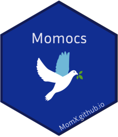

Momocs 2.0 
Part of MomX


News
- I plan a first Momocs2 release on CRAN on May, 1st 2020
- Momocs 1.3.0 will be maintained for a while.
- Bits of dismembered Momocs fed MomX ecosystem.
Here and now
This repository is for developping Momocs 2.0
Along the course of years, Momocs development has known several phases so did my ability to do basic and cool stuff in R. Now it’s time for a big cleanup of this tentacular package that became really painful to maintain.
I plan a release to CRAN in June 2020 or before. If you don’t like it, I’ll keep the last version (1.3.0) available but it will likely not be maintained in any way.
All suggestions, help, etc. are welcome, ring my bell: bonhomme.vincent@gmail.com.